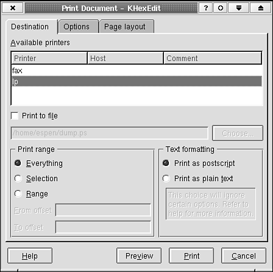

8.5. Dialog Style and KDialogBaseDialog appearance is an important topic when you are designing a dialog. The best design rule is simply to think first and to select the components that are best suited for the task. A quick sketch on a piece of paper to show how the dialog should look is helpful. The KDialogBase class has itself been designed to simplify dialog creation. It provides you with the framework that you will need every time you design a dialog. This includes standardized action buttons, an optional button separator above these buttons, methods that give you the margin and spacing you should use, and automatic dialog title creation that complies with the KDE style guide. If you use the class properly, KDialogBase makes sure that a certain style is enforced. This is important from an end-user perspective because the more familiar a dialog is, the easier it is to use it. The KDialogBase class simplifies the design process; the time you need to spend on coding and later maintaining it will be reduced. For example, as indicated in the previous code listings using KDialogBase, you define what kind of action buttons you want to display, but the KDialogBase dialog code decides where the buttons should be placed, what text and accelerators they should display, and the margins, the spacing, and the order. The KDialogBase class provides a number of predefined action buttons. A list of the available ones follows. The list order decides the order in which they are displayed.
The action button order is defined by the current KDE style. When this chapter was written, no format style had been defined, but KDialogBase uses what has become a standard button order:
The | sign indicates that Apply and Try cannot be present at the same time, nor Cancel and Close. A stretchable space will be added to the right of the Default button. You must add your own text and accelerators to the user-definable buttons. Figure 8.4 illustrates the stretchable space and custom button texts as shown in a typical print dialog box. Listing 8.12 shows the constructor signature that makes the dialog. Example 8.12. Setting the Text of User-Definable Action Buttons in the Constructor
Figure 8.4. Usage of user-definable action buttons and stretchable space between them. The dialog itself is based on the KDialogBase class in Tabbed mode.  The default button layout area is at the bottom of the dialog. The buttons are then, as you have seen, placed horizontally on a line in this area. However, it is possible to place the buttons vertically at the right edge area of the dialog as well. To accomplish this, tell KDialogBase to do so by using the function KDialogBase:: setButtonBoxOrientation(int orientation)in the constructor of your dialog. The orientation argument shall then be Vertical. For each button, the KDialogBase class provides a slot and a signal. The Apply button, when activated, executes the KDialogBase::slotApply(), which, in turn, emits the KDialogBase::applyClicked() signal. Every slot method is a virtual method; therefore, you can override it with your own slot method. This was done in Listing 8.3 where the original slotOk() was replaced. Note: The signal will not be emitted if you replace the default slot. Each button has a slot (for example, slotHelp(), slotUser2()) and a signal (for example, helpClicked(), user2Clicked()). You can deduce from Listing 8.12 and Figure 8.4 that the dialog title string is modified before it is displayed in the window manager (WM) field. The KDialogBase class code does this according to the KDE-style-guide recommendation. The style is dependent on a global setting, which the user can change, so generally, you should not assume anything about the format of the displayed text.
Note that KDE does not depend on a specific window manager. There is actually no guarantee that the active window manager will show the title (although this is by far the most common behavior). Therefore, you should not depend on the title for the dialog box function. The title is not the place to print a help string. Generally, you should not be dependent on the window manager at all. It is there for convenience. Never make a dialog box that cannot be closed or hidden without using a Close button normally provided by the window manager. Most window managers in Linux/UNIX are highly configurable, and your target user may have a window manager preference that you have not anticipated. For example, the standard window manager for the KDE 1.x versions could be configured to turn off all decorations. Some people will do that. |